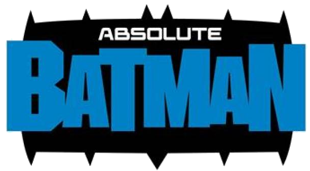

Bienvenido a mi pagina de Absolute Batman

Absolute Batman es una serie de cómics de superhéroes publicada por DC Comics, basada en el personaje Batman en un universo donde se desata y se da a conocer una de las versiones mas oscuras, perversas y traumatizantes de este universo. La serie está escrita por Scott Snyder e ilustrada por Nick Dragotta. Comenzó a publicarse el 9 de octubre de 2024, es el primer título del sello editorial Absolute Universe (AU) de DC.

A principios de julio de 2024, se informó que una serie de cómics centrada en Batman escrita por Scott Snyder e ilustrada por Nick Dragotta estaría en proceso como parte del entonces rumoreado sello Absolute Universe (AU) de DC Comics. La serie, titulada Absolute Batman, se anunció oficialmente más tarde ese mes, y se reveló que el escritor del cómic, Snyder, también supervisaba el sello. Absolute Batman comenzó a publicarse el 9 de octubre de 2024, como el primer título bajo el sello editorial Absolute Universe.

La colección Absolute Batman está compuesta por un total de 12 tomos y estos divididos en 2 arcos, cada uno cuidadosamente diseñado para explicar el origen de esta version de Batman en su máximo esplendor. Estos volúmenes presentan desde los inicios del vigilante hasta sus enfrentamientos contra sus nuevos y muchisimo mas mejorados villanos. Cada tomo incluye ilustraciones, portadas y material que profundiza en la evolución del personaje y su impacto dentro de este nuevo universo DC. Es una edición pensada para los verdaderos fanáticos del mito de un Batman y su version mas oscura. El primer arco se reune en una coleccion titulada "THE ZOO" mientras que el segundo arco aun no tiene una coleccion con nombre.

| Titulo | Paginas | Publicacion | Clasificacion | Sinopsis |
|---|---|---|---|---|
| "Absolute Batman #1" | 44 paginas | Oct 9, 2024 | 12+ | Sin la mansion, sin el dinero, sin Alfred. Solo el Caballero de la noche. |
| "Absolute Batman #2" | 27 paginas | Nov 13, 2024 | 12+ | Batman se enfrenta a Alfred Pennyworth, quien en este universo es un agente del MI6. |
| "Absolute Batman #3" | 28 paginas | Dec 18, 2024 | 12+ | Batman y Alfred han formado una alianza, pero Black Mask también tiene nuevos amigos y vienen a Gotham para causar estragos. |
| "Absolute Batman #4" | 29 paginas | Ene 8, 2025 | 12+ | Absolute Batman se ha establecido como una fuerza extremadamente grande a tener en cuenta. Pero, ¿cómo llegó a este punto? ¿Cómo se esforzó? ¿Y cómo los trágicos acontecimientos de su infancia, y los consejos de su padre, moldearon al hombre en el que se convirtió. |
| "Absolute Batman #5" | 26 paginas | Feb 12, 2025 | 12+ | Un tragico final para Batman? Se entregara Batman a Black Mask?. Y que relacion tiene el alcalde James Gordon con un Bruce Wayne Joven? Todo esto respondido en este numero, penultimo antes del cierre del primer arco. |
| "Absolute Batman #6" | 29 paginas | Mar 19, 2025 | 15+ | Este es el fin. Bruce Wayne, un joven que ha construido toda su vida para subir de nivel, para convertirse en un hombre más grande que sus enemigos y los obstáculos que se interponen en su camino, tendrá que derribar a Black Mask y su pandilla de Party Animals. Aqui termina el primer arco de esta saga. |
| Titulo | Paginas | Publicacion | Clasificacion | Sinopsis |
|---|---|---|---|---|
| "Absolute Batman #1" | 44 paginas | Oct 9, 2024 | 12+ | Sin la mansion, sin el dinero, sin Alfred. Solo el Caballero de la noche. |
| "Absolute Batman #2" | 27 paginas | Nov 13, 2024 | 12+ | Batman se enfrenta a Alfred Pennyworth, quien en este universo es un agente del MI6. |
| "Absolute Batman #3" | 28 paginas | Dec 18, 2024 | 12+ | Batman y Alfred han formado una alianza, pero Black Mask también tiene nuevos amigos y vienen a Gotham para causar estragos. |
| "Absolute Batman #4" | 29 paginas | Ene 8, 2025 | 12+ | Absolute Batman se ha establecido como una fuerza extremadamente grande a tener en cuenta. Pero, ¿cómo llegó a este punto? ¿Cómo se esforzó? ¿Y cómo los trágicos acontecimientos de su infancia, y los consejos de su padre, moldearon al hombre en el que se convirtió. |
| "Absolute Batman #5" | 26 paginas | Feb 12, 2025 | 12+ | Un tragico final para Batman? Se entregara Batman a Black Mask?. Y que relacion tiene el alcalde James Gordon con un Bruce Wayne Joven? Todo esto respondido en este numero, penultimo antes del cierre del primer arco. |
| "Absolute Batman #6" | 29 paginas | Mar 19, 2025 | 15+ | Este es el fin. Bruce Wayne, un joven que ha construido toda su vida para subir de nivel, para convertirse en un hombre más grande que sus enemigos y los obstáculos que se interponen en su camino, tendrá que derribar a Black Mask y su pandilla de Party Animals. Aqui termina el primer arco de esta saga. |